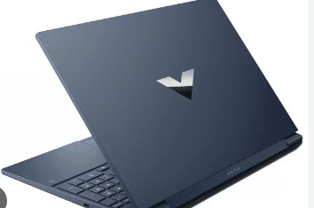

The HP Victus is a high-performance gaming laptop designed for both gamers and professionals who need a powerful device. It features modern Intel or AMD processors, dedicated NVIDIA graphics, and a sleek design optimized for performance and portability.

This laptop comes with a high-refresh-rate display, ensuring smooth visuals during gaming sessions. It also includes advanced cooling technology to prevent overheating and maintain consistent performance during intensive tasks.
For detailed specifications and purchase options, visit the official HP website: HP Victus Laptops.
HP Victus also supports fast charging, long battery life, and customizable RGB keyboard lighting, making it a great choice for both gaming and productivity.
Check out some reviews and guides here: HP Victus Review.